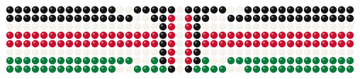

Day 30 of your plan · No weed
Your bracelet.
One bead for every day you kept your word. A slip leaves a gap, but every bead you earned stays on.
Your bracelet, day by day
- Day 1: kept
- Day 2: kept
- Day 3: kept
- Day 4: kept
- Day 5: kept
- Day 6: slipped
- Day 7: kept
- Day 8: kept
- Day 9: kept
- Day 10: kept
- Day 11: kept
- Day 12: kept
- Day 13: kept, shield (7 in a row)
- Day 14: paused
- Day 15: paused
- Day 16: kept
- Day 17: kept
- Day 18: kept
- Day 19: kept
- Day 20: kept
- Day 21: kept
- Day 22: kept, shield (14 in a row)
- Day 23: not recorded
- Day 24: kept
- Day 25: kept
- Day 26: kept
- Day 27: kept
- Day 28: kept
- Day 29: not recorded yet
- Day 30: today, not checked in yet
- Kept: a bead
- 7 in a row: the shield
- Slipped: a red mark
- Paused: a knot
- Not recorded yet
- Not recorded
- Beads
- 24
- Current streak
- 5 days
- Longest streak
- 14 days
- Consistency
- 92%
Example record
Look at day 6. One slip, and every bead around it is still there.
What happened.
You can fix any day for 3 days. After that it's locked, and a change adds a note instead of rewriting the past.
| Day | What happened | Note |
|---|---|---|
| 30 · Tue | Today | Check in tonight |
| 29 · Mon | Not recorded yet | Open until Thursday. Fill it in |
| 28 · Sun | Kept | |
| 27 · Sat | Kept | Said no at a friend's place. |
| 26 · Fri | Kept | |
| 25 · Thu | Kept | |
| 24 · Wed | Kept | Back on it. |
| 23 · Tue | Not recorded | No check-in for 3 days, so it locked. It is not counted as a slip. |
| 22 · Mon | Kept | 14 in a row: second shield. |
| 21 · Sun | Kept |
Days 1 to 20
| Day | What happened | Note |
|---|---|---|
| 16–20 | Kept | 5 days. The streak picked up where it paused. |
| 14–15 | Paused | Funeral upcountry. No beads, no break. |
| 13 · Sat | Kept | 7 in a row: first shield. |
| 7–12 | Kept | Next step after the slip: "plan for the trigger". |
| 6 · Sat | Slipped | A friend's birthday. Recorded honestly. |
| 1–5 | Kept | First 5 beads. |
How the bracelet works.
Every mark means one thing. You can't buy a bead, and nobody can take one away.
- Kept
- You checked in and said you kept your word today. One bead goes on, in the flag's colours.
- The shield
- Every 7th kept day in a row, the bead is the Maasai shield and spears from the flag.
- Slipped
- You smoked and said so. A small red mark, and the streak starts again. Every earned bead stays.
- Paused
- Life happened: exams, a funeral, a sick day. You tell us why, and a knot goes on. No bead, and no broken streak.
- Not recorded yet
- You haven't checked in. For 3 days you can still fill it in. We never guess that you slipped.
- Not recorded
- After 3 days with no check-in, the day locks as bare thread. The streak ends, but it isn't counted as a slip.
How the numbers work.
- Beads
- Every kept day. 24 here.
- Current streak
- Kept days in a row, up to now. Paused days are skipped over. 5 here (days 24 to 28).
- Longest streak
- Your best run ever. 14 here (days 7 to 22, with the pause in the middle).
- Consistency
- Kept days ÷ finished days that weren't paused. 24 ÷ 26 = 92%. Today and yesterday aren't counted yet, because they're still open.
Bead by bead, piece by piece.
-

Bracelet30 beads · 24 so far - Double bracelet60 beads
- Necklace100 beads
- Hero's collar365 beads
Today's bead is one check-in away.
Check in tonight